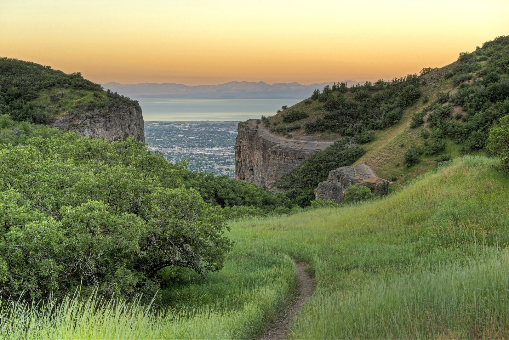
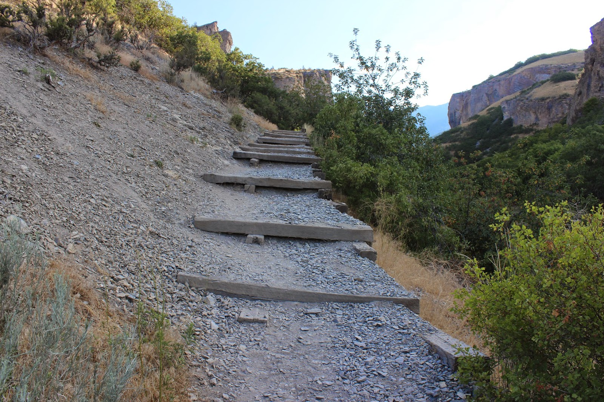
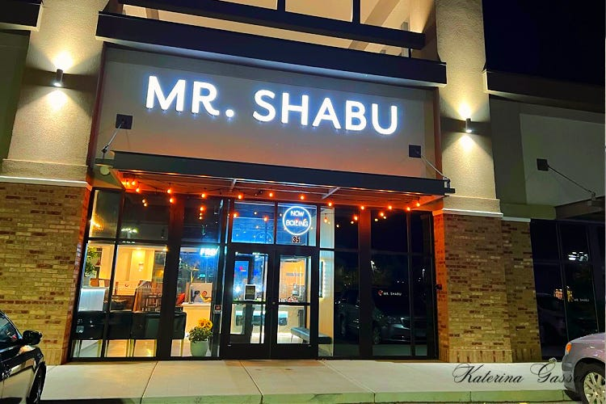
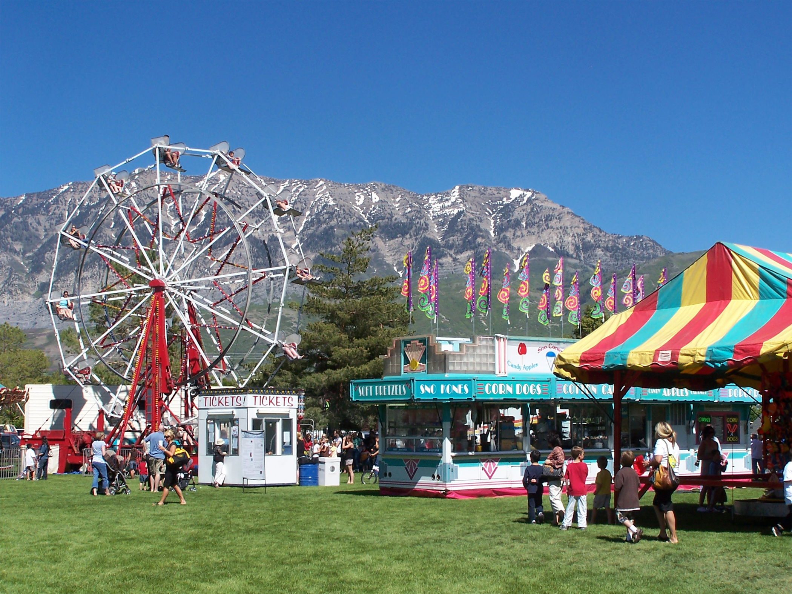

Discover the Rich Beauty of Orem and its mountains and canyons
DRY CANYON HIKING
Explore this 5.4-mile out-and-back trail near Lindon, Utah. Generally considered a challenging route, it takes an average of 4 h 37 min to complete. This is a popular trail for backpacking, camping, and hiking, but you can still enjoy some solitude during quieter times of day. The best times to visit this trail are April through October. Dogs are welcome and may be off-leash in some areas.Best Hot Pot restaurant in Utah
Mr. Shabu's owner brings with him 18 years of experience in the meat supply business. With his extensive knowledge in meats. Mr. Shabu provides hand-selected premium meats for the best shabu-shabu experience. 31W. University Parkway Orem, UT 84058



